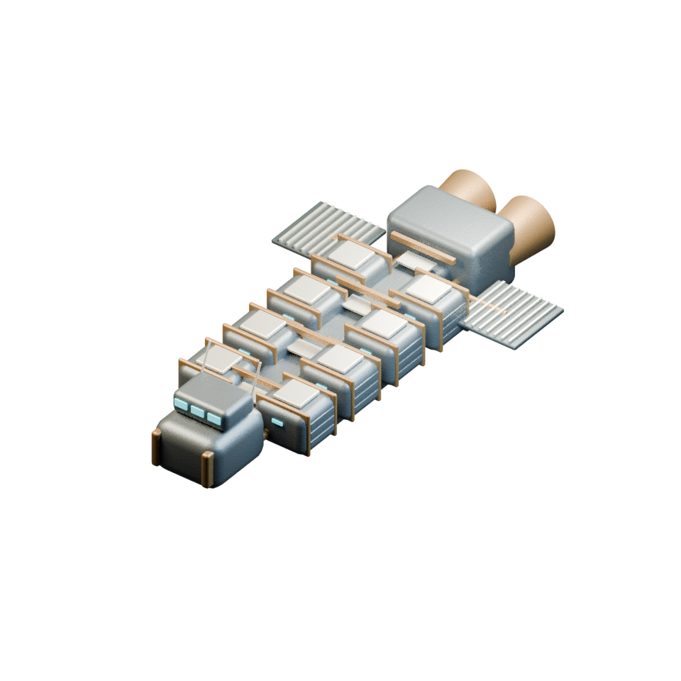

NOUVELLE SILHOUETTE / PROPOSITION V01
Un navire assemblé pour durer.
Des compartiments protégés autour d’une épine centrale.

Une proposition indépendante
Passerelle à l’avant, compartiments de stase blindés, drôme ventrale, radiateurs latéraux et deux tuyères arrière. Les plaques et ceintures suggèrent un navire entretenu par reprises successives.
L’agencement et les proportions sont proposés. Les compartiments ne définissent pas encore une correspondance exacte avec les personnes, les emplacements ou les capacités du jeu. La corrosion fine et les intérieurs restent à travailler.
Trois vues du même modèle modifiable, sans animation. Cette silhouette ne remplace ni le vaisseau actuel ni le prologue ; leur mise en scène devra être revue si elle est retenue.